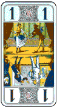
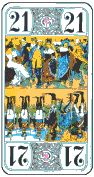
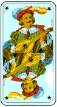

French Tarot
Introduction
Games are played with Tarot cards in various countries of Europe, but nowhere is it as popular as in France. There are clubs, tournaments (including duplicate events) and an official body, the Fédération Française de Tarot. French Tarot is also played in the French speaking parts of Canada. The following description is partly based on contributions from Craig Kaplan, Michel Braunwarth and Eric Betito.
The Players
Tarot is a trick-taking game in which the partnerships vary from hand to hand. It is most commonly played by four players, and this version is described first. However it is also common for five to play, and it is also possible for three; the necessary modifications will be described at the end.
The Cards
The deck consists of 78 cards. The four suits are the standard ones of diamonds, hearts, spades and clubs, and each suit contains fourteen cards ranking from high to low:
Roi (king), Dame (queen), Cavalier (knight), Valet (jack), 10, 9, 8, 7, 6, 5, 4, 3, 2, 1.
In addition to the four standard suits there is a extra suit of twenty-one atouts (trumps) numbered from 21 (high) to 1 (low).
Finally, there is a special card called the excuse, or the fool, marked with a star in the corner.
Three cards, the 1 of trump (called the petit), the 21 of trump and the excuse are particularly important in the game and are known as bouts ("ends") or sometimes in books as oudlers.
  
Not only are the bouts worth points, but having them in your tricks also reduces the total number of points you need to win.
In North America, French Tarot cards can be obtained from TaroBear's Lair.
Values of the cards
In each hand one player, the taker (le preneur) plays alone against the other three in partnership. The taker's objective is to accumulate enough card points to win the hand by taking tricks.
For every card in every trick taken, you get the following card points:
Bouts (21, 1, excuse): 4.5 points each
Kings: 4.5 points each
Queens: 3.5 points each
Knights: 2.5 points each
Jacks: 1.5 points each
Other cards: 0.5 points each
It's easiest to count them in pairs, grouping each court card or bout with a 0.5 point card - so for example a queen and a pip card together are worth 4 points. The total of the card points is 91.
The number of points the taker needs to win depends on the number of bouts the taker has in his tricks:
- With 3 bouts the taker needs at least 36 card points to win;
- With 2 bouts the taker needs at least 41 card points to win;
- With 1 bout the taker needs at least 51 card points to win;
- With 0 bouts the taker needs at least 56 card points to win.
The Deal
The first dealer is chosen at random - thereafter the turn to deal passes to the right after each hand (the whole game is played counter-clockwise). The player opposite the dealer shuffles and the player to the left of the dealer cuts.
In a hand, 18 cards are dealt to each player, in packets of 3. During the deal, six cards are dealt face down to the centre of the table to form the talon or chien ("le chien" literally means "the dog", but maybe a better English equivalent is "kitty", since this word is used in other card games for a group of cards set aside during the deal). The chien cards are dealt singly at any time during the deal, at the choice of the dealer, except that the first three and the last three cards of the deck cannot be dealt to the chien.
A player who is dealt only the 1 of trumps and no others (counting the excuse as a trump) immediately declares this and the hand is cancelled - the cards are thrown in and the next dealer deals.
The Bids
Each player, starting with the player to the dealer's right and continuing counter-clockwise, has just one chance to bid on the hand, or pass. If someone bids, subsequent players have the choice of bidding higher or passing. If all four players pass, the hand is thrown in and the next dealer deals (this happens quite often).
The possible bids, from lowest to highest, are as follows:
- Petite (Small) - also known in many of the books as prise (take)
- You can use the chien cards to improve your hand (see below) and you then try to take enough card points in tricks to win.
- Garde (Guard)
- Same as Petite but outranks Petite in bidding.
- Garde sans le chien (Guard without the kitty)
- No one looks at the chien, but the card points in it count as part of the taker's tricks.
- Garde contre le chien (Guard against the kitty)
- No one looks at the chien and it is counted as part of the tricks of the opponents of the taker.
The highest bidding player becomes the taker. The remaining three players form a temporary team, trying to prevent the bidder from making enough card points.
In Petite or Garde, the taker turns the six cards of the chien face up for all to see and then takes them into his hand. He then discards face down any six cards which must not include trumps, kings or the excuse. In the (very rare) case that the taker can't obey this rule, he can discard trumps (but never bouts); any trumps discarded must be shown to the other players. The cards discarded by the taker count as part of his tricks.
The play of the cards
When the discard is complete, the cards are played. The player to the dealer's right leads to the first trick.
Each trick is won by the highest trump in it, or the highest card of the suit led if no trumps were played. The winner of a trick leads to the next.
You have to follow suit if you can, and if you have no cards of the suit which was led you must play a trump. If trumps are led, the other players must of course follow with trumps if they can.
There is a further restriction: whenever you have to play a trump (either because trumps were led or because you have no cards of the suit which was led), you must if possible play a trump which is higher than the highest trump so far played to the trick. If you are unable to do this, you are free to play any trump, but you must still play a trump, even though you cannot win the trick with it.
Playing the excuse
The excuse is an exception to the above rules. If you hold the excuse you may play it to any trick you choose - irrespective of what was led and whether you have that suit or not. With one rare exception (see below), the excuse can never win the trick - the trick is won as usual by the highest trump, or in the absence of trumps by the highest card of the suit led.
It is legal to lead the excuse, and in this case the second player to the trick can play any card, and this second card defines what suit must be followed.
Provided that the excuse is played before the last trick, the team that played the excuse keeps it in their trick pile, even though they may have lost the trick to which it was played. If the trick is in fact won by the opponents of the player of the excuse, the trick will be one card short; to compensate for this, the team that played the excuse must transfer one card from their trick pile to the winners of the trick. This will be a 0.5 point card; if they do not yet have such a card in their tricks, they can wait until they take a trick containing a 0.5 point card and transfer it then.
If the excuse is played in the last trick, the excuse is taken by the team who wins the trick. (Note: this was the rule given by most books, at least until the 1990's, but the official rules of the Fédération Française de Tarot (FFT) are slightly different. They say that if the Excuse is played to the last trick it changes sides. So according to the FFT rule, if an opponent of the bidder plays the Excuse to the last trick, the declarer captures the Excuse even if he does not win the trick.)
There is just one extremely rare case in which the excuse can win a trick: if one team has won every trick except the last one, and then leads the excuse to the last trick the excuse wins.
Bonuses
There are some special bonuses. The scores for these bonuses are not card points, so they do not help you to win your bid. They are extra points which can be scored in addition to what you win or lose for your bid.
Poignée
This is a bonus which is scored if a player declares that he has 10 or more trumps:
10 trumps : 20 points (Single Poignée) 13 trumps : 30 points (Double Poignée) 15 trumps : 40 points (Triple Poignée)
To declare a poignée, the holder must show the correct number of trumps just before playing to the first trick. The trumps must be sorted so that the other players can easily see what is there. The excuse can be counted as a trump in a poignée, but if the excuse is shown, this indicates that the player does not have any other trumps concealed. The bonus is counted for the team who wins the hand, so if you declare a poignée and then lose, you have given the bonus points to the other side. A poignée is only scored if it is declared. It is not compulsory to declare a poignée when you have one; if you hold 10 or more trumps but are not confident that your side will win you may be wiser not to mention it.
Petit au bout
This is a bonus which occurs if the 1 of trump is played in the last trick. In this case the team that takes the last trick wins the bonus (10 points).
Chelem
Chelem (= Slam) is a bonus for taking all the tricks. The score depends on whether it was announced in advance:
- Chelem annoncé: the team (the taker normally) announces chelem before the beginning of the play, and leads to the first trick. The bonus is 400 points if they succeed in winning every trick and -200 points penalty if they fail).
- Chelem non annoncé: the team wins all the tricks without having announced it. They get a bonus of 200 points.
If one side has won all the tricks except the last, and then leads the excuse to the last trick, the excuse wins. This special rule, which probably comes up about once in a lifetime, allows a chelem to be made by a player with the excuse. When making a chelem with the excuse in this way, it counts as petit au bout if you win the 1 of trumps in the second last trick.
The scoring
At the end of the hand, the taker counts his card points and the opposing team pool their tricks and count their card points. The six chien cards are added to the taker's tricks, unless the bid was "Garde contre le chien", in which case the chien cards are added to the opponents' tricks. The taker wins if he has enough card points, depending on the number of bouts in his tricks.
The amount of points won or lost by the taker is calculated as follows:
- 25 points for the game
- plus the difference between the card points the taker actually won and the minimum number of points he needed (pt).
- the petit au bout bonus is added or subtracted if applicable (pb)
This total is multiplied by a factor (mu) depending on the bid:
Petite (Prise) x 1
Garde x 2
Garde sans le chien x 4
Garde contre le chien x 6
The following bonuses are then added or subtracted if they apply; they are not affected by the multiplier:
The calculation of the score, expressed as a formula, is: ((25 + pt + pb) * mu) + pg + ch
The calculated points are either won by the taker from all three opponents or lost by the taker to all three opponents. The opponents always win or lose equally: for example if one of them wins petit au bout they all benefit.
Example of scoring:
A B C D Hand #1 240 -80 -80 -80 Hand #2 144 208 -176 -176 Hand #3 216 280 -392 -104 Hand #4 186 250 -302 -134 Hand #5 108 172 -380 100
Hand #1: A bids garde and has 56 card points with 2 bouts. Each other player gives (25 + 15) * 2 = 80 points to A.
Hand #2: B bids garde, has 49 card points with 3 bouts and takes the last trick with the 1 of trump. Each other player gives (25 + 13 + 10 )* 2 = 96 points to B.
Hand #3: C bids garde, has 40 card points with 2 bouts and the other team takes the last trick with the 1 of trump. C gives (25 + 1 + 10) * 2 = 72 points to each other player.
Hand #4: C bids garde with 3 bouts, and takes 41 card points, but the other team captures his 1 of trumps in the last trick. C now only has two bouts in tricks so his target score becomes 41. Each other player gives (25 + 0 - 10) * 2 = 30 points to C.
Hand #5: D bids garde, has 40 card points with 3 bouts and the other team declares a poignée of 10 trumps. Each other player gives (25 + 4) * 2 + 20 = 78 points to D.
Note: to make the addition easier, some players prefer to round all the scores to the nearest 5 or 10 points.
Tarot for Three Players
The game is essentially the same as with four players. Each player is dealt 24 cards, in packets of 4. Because the hands are larger the number of trumps needed for a poignée is increased: single 13; double 15; triple 18.
Because the tricks contain an odd number of cards, there will sometimes be an odd half card point when counting. This is rounded in favour of the taker if he wins, and in favour of the opponents if he loses. If the taker is half a point short of the target, the bid is lost by one card point.
Tarot for Five Players
Each player is dealt 15 cards, so there are only 3 cards in the chien. The number of trumps needed for a poignée is reduced: single 8; double 10; triple 13. Half card points are treated as in the three player game.
With five players, there are two teams. Before exposing the talon, the taker calls a king and the player who has that card plays as the partner of the taker; the other three players play as a team against them. If the taker has all four kings, he may call a queen. The holder of the called king must not say anything to give away the fact that he has it. The identity of the taker's partner is only revealed when the called king is played, though it may be suspected earlier from the fact that the holder of the king will try to help the taker. If the called king (or queen) is found to be in the chien or in the hand of the taker, then the taker plays alone against four opponents.
Many people play that when the taker has a partner, the taker pays or receives double, while the partner and the three opponents pay or receive singly. Others play that the taker and partner split the gain or loss equally between them, which is more awkward, because it can lead to fractional scores. If the taker plays alone, the taker's win or loss will of course be four times that of each opponent.
Note on Poignée
Whatever the number of players, you can remember the minimum number of trumps needed for a Poignée as follows: you have a Poignée if more than half of the cards in your hand are trumps.
Variations
Other variants for five players:
- Each player is dealt 14 cards and there are 8 cards in the chien but the taker is alone. This variant is very rarely played.
- The dealer doesn't take part in the hand but deals to the other four players who play as in the four handed game. If everyone passes the same dealer redeals until someone bids.
In the five player game with calling a king, some people play that you are not allowed to lead the suit of the called king in the first trick, except that if the holder of the king happens to be on lead, the king itself may be led.
Variations in the bidding
There used to be a bid between petite and garde called pousse; the conditions are the same but the score is different - some players still allow this. On the other hand some play without petite, so that the lowest bid is garde.
Petit imprenable
Some play that a player dealt the petit (1 of trumps) alone (i.e. not holding any other trumps or the excuse) does not have to cancel the hand, but instead can declare "petit imprenable" (untouchable one). The player then plays the petit as though it were another excuse - it loses the trick, but the player keeps the card. Practice varies as to whether "petit imprenable" is declared immediately after the deal, when the player plays to the first trick, or not until the petit itself is played.
Some play that a player who is dealt the excuse but no other trumps is also allowed to cancel the hand.
Bonuses
The following bonuses are allowed by some players:
- misère
- - a bonus if you have no trumps or no court cards, worth 10 points
- petit chelem
- - a bonus for making nearly all the tricks - all except one or all except three, as agreed by the players
Some people require the declarations to be made before the first lead, rather than at declarer's first turn to play.
Scoring
Apart from the tournament scoring given in the main account, there are many alternative scoring system in use. For example:
80 for Garde; 160 for Garde Sans; 320 for Garde Contre; 500 for a petit chelem; 1000 for a grand chelem; card points above or below those needed for the contract rounded to the nearest 10; no multiplying factors; other scores as above.
Another version: petite x1, garde x2, garde sans x4, garde contre x5; grand chelem wins 400 if announced and made, loses 200 if announced and lost, wins 200 if made without announcement; petit chelem (all but one trick) 300 if announced and made, loses 150 if announced and lost, no score if made without announcement.
When playing with the pousse bid, the multipliers may be: petite x1, pousse x2, garde x4, garde sans x8, garde contre x12.
Poignées may score: single 10, double 20, triple 40.
French Tarot used to be played with pools (mouches). This method is a little cumbersome and has been dropped for club and tournament play, but it may still be encountered in informal games. At the beginning of the game, and subsequently whenever there are no mouches, everyone pays an equal amount (say 10) to form a mouche, and the dealer adds an extra 5. A player who wins a contract takes the largest mouche; a declarer who loses pays into a new mouche equal in size to the largest mouche. At the beginning of each deal, the dealer adds 5 to (one of the) largest mouche(s). When playing with mouches there may be no base payment for the game - only for the card points won in excess of the minimum needed.
Direction of play
In some places the entire game is played clockwise rather than anticlockwise.
Tarot for Two Players
This section is based on a contribution from Maxence Crossley
The game is basically the same as for four players, but each player has 21 cards in hand plus 18 more on the table in six piles of three, each pile having the top card face up.
The deal is as follows: three cards one by one to your opponent, face down, side by side; then three cards to yourself, similarly; then three more to your opponent alongside the first three cards and three more to yourself. At this point there is a row of six cards face down in front of each player. Now repeat the process, dealing the new cards on top of the old ones, so that each player has six face-down piles of two cards. Then do the same again, but dealing the cards face up on top of the piles, so that each player has six piles of three cards with a face up card on top. The remaining cards are dealt out three at a time to the two players, so that each has a hand of 21 cards.
There is no bidding. The non-dealer leads, and the play continues under the usual rules - i.e. you must follow suit and trump if void, and when a trump is led it must be beaten if possible. The face-up cards on your piles can be played to tricks as though they were part of your hand. At the end of each trick, if you have played from a pile you turn the next card of that pile face up. At the end of the play, when both players have played all the cards from their hands and their piles, the winner is determined using the usual targets - for example if you have two bouts and your opponent has one, you win if you have 41 or more points and your opponent needs 51 or more to win. If you want to keep score, the winner gets 25 points plus one for each card point the winner has in excess of the target. If the petit is played to the last trick, the winner of the trick scores an extra 10 for petit au bout. There is no score for poignéee.